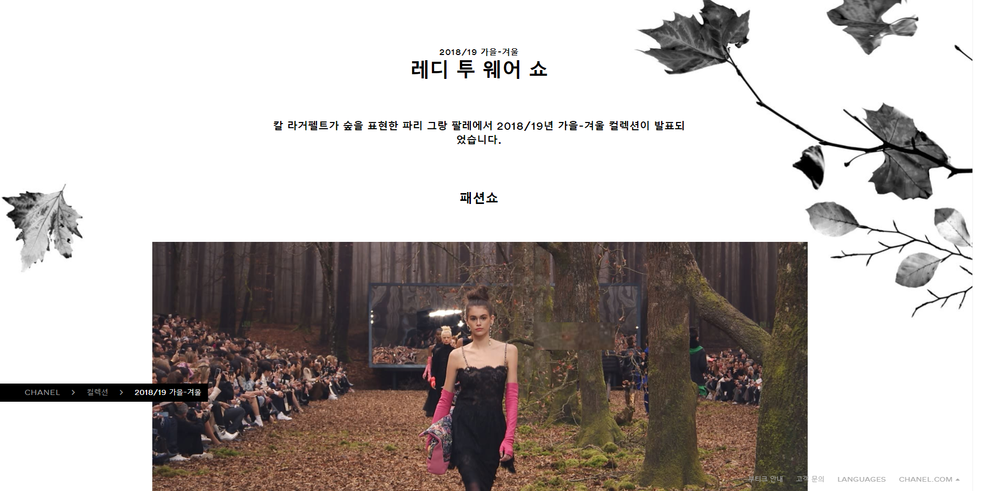

One Page Websites
1. Chanel

샤넬의 시즌 별 컬렉션을 볼 수 있는 페이지
패션쇼 영상과 옷의 디테일, 무대디자인, 백스테이지, 칼 라거펠트의 영감, 화보 등 컬렉션의 A-Z를 감상할 수 있다.
2. MANYSTUFF

매일 디자인 사진들을 업데이트하는 사이트
건축, 그래픽디자인, 일러스트, 포토그래피 등 다양한 이미지와 함께 작품에 대한 자세한 설명들도 같이 올라와 있다.
3. THE LONDON LOOM

텍스타일 관련 작업을 하는 디자이너의 웹페이지
작가의 책, 영상, 작업물 , 워크샵 등을 볼 수 있다.
4. Dezeen

건축 디자인 온라인 매거진
만들고 싶은 홈페이지
좋아하는 영화를 소개하는 페이지를 만들고 싶다. 기본적인 스타일은 샤넬의 웹사이트처럼 하고 싶다.
2016286049 장지영